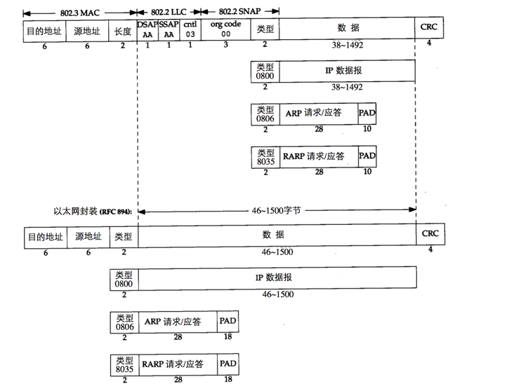
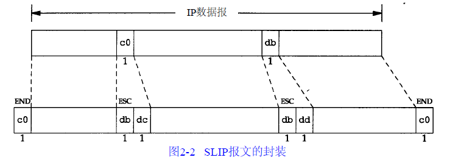
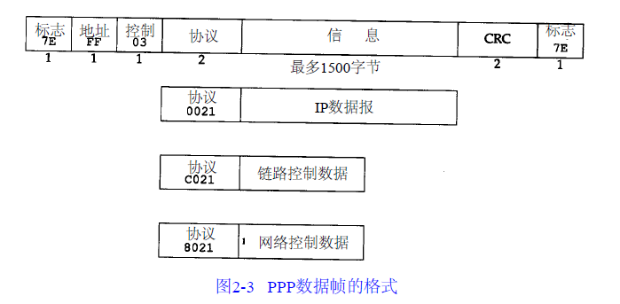
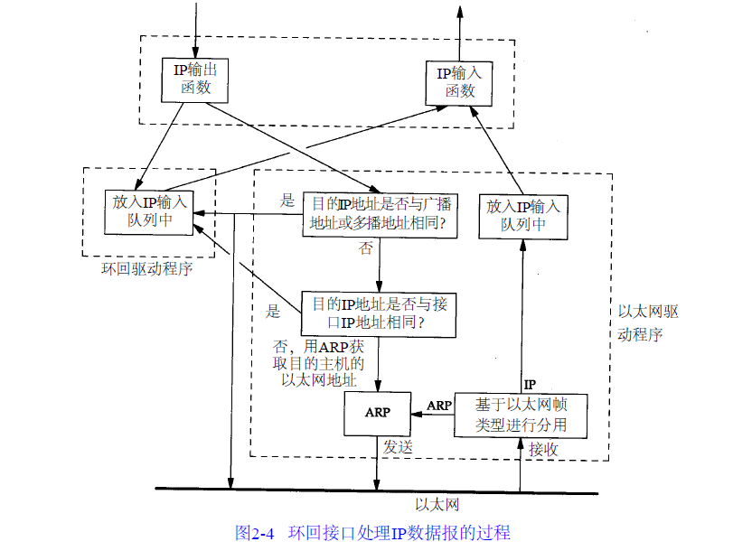

链路层
Table of Contents
在TCP/IP协议族中，链路层主要有三个目的：
- 为IP模块发送和接收IP数据报
- 为ARP模块发送ARP请求和接收ARP应答
- 为RARP发送RARP请求和接收RARP应答
TCP/IP支持多种不同的链路层协议，这取决于网络所使用的硬件，如以太网、令牌环网、FDDI(光纤分布式数据接口)及RS-232串行线路等
在本章中，将详细讨论以太网链路层协议，两个串行接口链路层协议(SLIP和PPP)，以及大多数实现都包含的环回(loopback)驱动程序。最后对MTU(最大传输单元)进行了介绍
以太网
以太网一般是指数字设备公司(Digital Equipment)、英特尔公司和Xerox公司在1982年联合公布的一个标准。它是当今TCP/IP采用的主要的局域网技术。它采用一种称作CSMA/CD的媒体接入方法，其意思是带冲突检测的载波侦听多路接入。它的速率为10Mb/s，地址为48bit
几年后，IEEE(电子电气工程师协会)802委员会公布了一个稍有不同的标准集，其中：
- 802.3针对整个CSMA/CD网络
- 802.4针对令牌总线网络
- 802.5针对令牌环网络
这三者的共同特性由802.2标准来定义，那就是802网络共有的逻辑链路控制。不幸的是，802.2和802.3定义了一个与以太网不同的帧格式
头部
在TCP/IP世界中，以太网IP数据报的头部是在RFC894中定义的，IEEE802网络的IP数据报封装是在RFC1042中定义的。主机需求RFC要求每台Internet主机都与一个10Mb/s的以太网电缆相连接：
- 必须能发送和接收采用RFC894(以太网)封装格式的分组
- 应该能接收与RFC894混合的RFC1042(IEEE802)封装格式的分组
- 允许能够发送采用RFC1042格式封装的分组。如果主机能同时发送两种类型的分组数据，那么发送的分组必须是可以设置的，而且默认条件下必须是RFC894分组
最常使用的封装格式是RFC894定义的格式，下图显示了两种不同形式的封装格式。图中每个方框下面的数字是它们的字节长度：

硬件地址字段
两种帧格式都采用48bit(6字节)的目的地址和源地址(802.3允许使用16bit的地址，但一般是48bit地址)，这就是我们在所称的硬件地址(mac address)：
ARP和RARP协议：对32bit的IP4地址和48bit的硬件地址进行映射
以太网类型字段
接下来的2个字节在两种帧格式中互不相同：
- 在802标准定义的帧格式中，长度字段是指它后续数据的字节长度，但不包括CRC检验码
- 以太网的类型字段定义了后续数据的类型
- 0x0800：IP数据报
- 0x0806：ARP请求/应答
- 0x0835：RARP请求/应答
802定义的有效长度值与以太网的有效类型值无一相同，这样，就可以对两种帧格式进行区分
802帧类型字段
- 在以太网帧格式中，类型字段之后就是数据
- 而在802帧格式中，跟随在后面：
- 3字节的802.2LLC
- DSAP：目的服务访问点(Destination Service Access Point)，值为0xAA
- SSAP：源服务访问点(Source Service Access Point)，值为0xAA
- Ctrl：值为0x03
- 5字节的802.2SNAP
- org code：3个字节，都置为0
- 类型： 2个字节类型字段和以太网帧格式一样
- 3字节的802.2LLC
CRC字段
CRC字段：用于帧内后续字节差错的循环冗余码检验
PAD
802.3标准定义的帧和以太网的帧都有最小长度要求：
- 802.3规定数据部分必须至少为38字节
- 以太网则要求最少要有46字节
为了保证这一点，必须在不足的空间插入填充PAD字节
尾部
RFC893描述了另一种用于以太网的封装格式，称作尾部封装。
这是一个早期BSD系统在DEC机上运行时的试验格式，它通过调整IP数据报中字段的次序来提高性能。在以太网数据帧中，开始的那部分是变长的字段(IP首部和TCP首部)。把它们移到尾部(在CRC之前)，这样当把数据复制到内核时，就可以把数据帧中的数据部分映射到一个硬件页面，节省内存到内存的复制过程。TCP数据报的长度是512字节的整数倍，正好可以用内核中的页表来处理。两台主机通过协商使用ARP扩展协议对数据帧进行尾部封装。这些数据帧需定义不同的以太网帧类型值
现在尾部封装已遭到反对和废弃
SLIP
SLIP是一种在串行线路上对IP数据报进行封装的简单形式，在RFC1055中有详细描述。SLIP适用于家庭中每台计算机几乎都有的RS-232串行端口和高速调制解调器接入Internet
下面的规则描述了SLIP协议定义的帧格式：
- IP数据报以一个称作END(0xc0)的特殊字符结束。同时，为了防止数据报到来之前的线路噪声被当成数据报内容，大多数实现在数据报的开始处也传一个END字符(如果有线路噪声，那么END字符将结束这份错误的报文。这样当前的报文得以正确地传输，而前一个错误报文交给上层后，会发现其内容毫无意义而被丢弃)
- 如果IP报文中某个字符为END，那么就要连续传输两个字节0xdb和0xdc来取代它。0xdb这个特殊字符被称作SLIP的ESC字符，但是它的值与ASCII码的ESC字符(0x1b)不同
- 如果IP报文中某个字符为SLIP的ESC字符，那么就要连续传输两个字节0xdb和0xdd来取代它
下图中的例子就是含有一个END字符和一个ESC字符的IP报文，在串行线路上传输的总字节数是原IP报文长度再加4个字节：

缺陷
- 每一端必须知道对方的IP地址。没有办法把本端的IP地址通知给另一端
- 数据帧中没有类型字段（类似于以太网中的类型字段）。如果一条串行线路用于SLIP，那么它不能同时使用其他协议
- SLIP没有在数据帧中加上检验和（类似于以太网中的CRC字段）。如果SLIP传输的报文被线路噪声影响而发生错误。这样上层协议提供某种形式的CRC就显得很重要
CSLIP
由于串行线路的速率通常较低（19200b/s或更低），而且通信经常是交互式的（如Telnet和Rlogin，二者都使用TCP），因此在SLIP线路上有许多小的TCP分组进行交换。为了传送1个字节的数据需要20个字节的IP首部和20个字节的TCP首部，总数超过40个字节
既然承认这些性能上的缺陷，于是产生了一个被称作CSLIP（即压缩SLIP）的新协议，它在RFC 1144中被详细描述。CSLIP一般能把上面的40个字节压缩到3或5个字节。它能在CSLIP的每一端维持多达16个TCP连接，并且知道其中每个连接的首部中的某些字段一般不会发生变化。对于那些发生变化的字段，大多数只是一些小的数字和的改变。这些被压缩的首部大大地缩短了交互响应时间
PPP
PPP点对点协议修改了SLIP协议中的所有缺陷。PPP包括以下三个部分：
- 在串行链路上封装IP数据报的方法。PPP既支持数据为8位和无奇偶检验的异步模式，还支持面向比特的同步链接
- 建立、配置及测试数据链路的链路控制协议（LCP）。它允许通信双方进行协商，以确定不同的选项
- 针对不同网络层协议的网络控制协议（NCP）体系。当前RFC定义的网络层有IP、OSI网络层、DECnet以及Apple Talk等
数据帧格式
RFC 1548描述了报文封装的方法和链路控制协议。RFC 1332描述了针对IP的网络控制协议
下图是PPP数据帧的格式：

每一帧都以标志字符0x7e开始和结束。紧接着是一个地址字节，值始终是0xff，然后是一个值为0x03的控制字节
接下来是协议字段，类似于以太网中类型字段的功能：
- 值为0x0021时，表示信息字段是一个IP数据报
- 值为0xc021时，表示信息字段是链路控制数据
- 值为0x8021时，表示信息字段是网络控制数据
CRC字段是一个循环冗余检验码，以检测数据帧中的错误
字符转义
由于标志字符的值是0x7e，因此当该字符出现在信息字段中时，PPP需要对它进行转义。
在同步链路中，该过程是通过一种称作比特填充的硬件技术来完成的。在异步链路中，特殊字符0x7d用作转义字符。当它出现在PPP数据帧中时，那么紧接着的字符的第6个比特要取其补码，具体实现过程如下：
- 当遇到字符0x7e时，需连续传送两个字符0x7d和0x5e，以实现标志字符的转义
- 当遇到转义字符0x7d时，需连续传送两个字符0x7d和0x5d，以实现转义字符的转义
- 默认情况下，如果字符的值小于0x20（比如一个ASCII控制字符），一般都要进行转义。例如遇到字符0x01时需连续传送0x7d和0x21两个字符（这时第6个比特取补码后变为1，而前面两种情况均把它变为0）
这样做的原因是防止它们出现在双方主机的串行接口驱动程序或调制解调器中，因为有时它们会把这些控制字符解释成特殊的含义。另一种可能是用链路控制协议来指定是否需要对这32个字符中的某一些值进行转义。默认情况下是对所有的32个字符都进行转义
优点
与SLIP类似，由于PPP经常用于低速的串行链路，因此减少每一帧的字节数可以降低应用程序的交互时延。利用链路控制协议，大多数的产品通过协商可以省略标志符和地址字段，并且把协议字段由2个字节减少到1个字节。如果我们把PPP的帧格式与前面的SLIP的帧格式进行比较会发现， PPP只增加了3个额外的字节：1个字节留给协议字段，另2个给CRC字段使用
总的来说， PPP比SLIP具有下面这些优点：
- PPP支持在单根串行线路上运行多种协议，不只是IP协议
- 每一帧都有循环冗余检验
- 通信双方可以进行IP地址的动态协商(使用IP网络控制协议)
- 与CSLIP类似，对TCP和IP报文首部进行压缩
- 链路控制协议可以对多个数据链路选项进行设置。为这些优点付出的代价是在每一帧的首部增加3个字节，当建立链路时要发送几帧协商数据，以及更为复杂的实现
Loopback
大多数的产品都支持环回接口(Loopback Interface)，以允许运行在同一台主机上的客户程序和服务器程序通过TCP/IP进行通信。根据惯例，大多数系统把IP地址127.0.0.1分配给这个接口，并命名为localhost。一个传给环回接口的IP数据报不能在任何网络上出现
一旦传输层检测到目的端地址是环回地址时，应该可以省略部分传输层和所有网络层的逻辑操作。但是大多数的程序还是照样完成传输层和网络层的所有过程，只是当IP数据报离开网络层时把它返回给自己
下图是环回接口处理IP数据报的简单过程：

- 传给环回地址（一般是127.0.0.1）的任何数据均作为IP输入
- 传给广播地址或多播地址的数据报复制一份传给环回接口，然后送到以太网上。这是因为广播传送和多播传送的定义包含主机本身
- 任何传给该主机IP地址的数据均送到环回接口
看上去用传输层和IP层的方法来处理环回数据似乎效率不高，但它简化了设计，因为环回接口可以被看作是网络层下面的另一个链路层。网络层把一份数据报传送给环回接口，就像传给其他链路层一样，只不过环回接口把它返回到IP的输入队列中
在图2-4中，另一个隐含的意思是送给主机本身IP地址的IP数据报一般不出现在相应的网络上。例如在一个以太网上，分组一般不被传出去然后读回来。某些BSD以太网的设备驱动程序的注释说明，许多以太网接口卡不能读回它们自己发送出去的数据。由于一台主机必须处理发送给自己的IP数据报，因此图2-4所示的过程是最为简单的处理办法
MTU
以太网和802.3对数据帧的长度都有一个限制，其最大值分别是1500和1492字节。链路层的这个特性称作最大传输单元(MTU)。不同类型的网络大多数都有一个上限：
| 网络类型 | MTU字节 |
| 超通道 | 65535 |
| 16Mb/s令牌环 | 17914 |
| 4Mb/s令牌环 | 4464 |
| FDDI | 4352 |
| 以太网 | 1500 |
| IEEE 803.3/803.2 | 1492 |
| X.25 | 576 |
| PPP点对点 | 256 |
fragmentation
如果IP层有一个数据报要传，而且数据的长度比链路层的MTU还大，那么IP层就需要进行分片，把数据报分成若干片，这样每一片都小于MTU
路径MTU
当在同一个网络上的两台主机互相进行通信时，该网络的MTU是非常重要的。但是如果两台主机之间的通信要通过多个网络，那么每个网络的链路层就可能有不同的MTU。重要的不是两台主机所在网络的MTU的值，重要的是两台通信主机路径中的最小MTU。它被称作路径MTU
两台主机之间的路径MTU不一定是个常数。它取决于当时所选择的路由。而选路不一定是对称的（从A到B的路由可能与从B到A的路由不同），因此路径MTU在两个方向上不一定是一致的
串行线路吞吐量计算
如果线路速率是9600b/s，而一个字节有8bit，加上一个起始比特和一个停止比特，那么线路的速率就是960B/s（字节/秒）。以这个速率传输一个1024字节的分组需要1066ms。如果用SLIP链接运行一个交互式应用程序，同时还运行另一个应用程序如FTP发送或接收1024字节的数据，那么一般来说就必须等待一半的时间（533ms）才能把交互式应用程序的分组数据发送出去
假定交互分组数据可以在其他“大块”分组数据发送之前被发送出去。大多数的SLIP实现确实提供这类服务排队方法，把交互数据放在大块的数据前面。交互通信一般有Telnet、Rlogin以及FTP的控制部分（用户的命令，而不是数据）
这种服务排队方法是不完善的。它不能影响已经进入下游（如串行驱动程序）队列的非交互数据。同时，新型的调制解调器具有很大的缓冲区，因此非交互数据可能已经进入该缓冲区了
对于交互应用来说，等待533ms是不能接受的。关于人的有关研究表明，交互响应时间超过100～200ms就被认为是不好的。这是发送一份交互报文出去后，直到接收到响应信息（通常是出现一个回显字符）为止的往返时间。把SLIP的MTU缩短到256就意味着链路传输一帧最长需要266ms，它的一半是133ms（这是一般需要等待的时间）。这样情况会好一些，但仍然不完美。我们选择它的原因（与64或128相比）是因为大块数据提供良好的线路利用率（如大文件传输）。假设CSLIP的报文首部是5个字节，数据帧总长为261个字节，256个字节的数据使线路的利用率为98.1%，帧头占1.9%，这样的利用率是很不错的。如果把MTU降到256以下，那么将降低传输大块数据的最大吞吐量
点对点链路的MTU是296个字节。假设数据为256字节，TCP和IP首部占40个字节。由于MTU是IP向链路层查询的结果，因此该值必须包括通常的TCP和IP首部。这样就会导致IP如何进行分片的决策。IP对于CSLIP的压缩情况一无所知
注意：我们对平均等待时间的计算（传输最大数据帧所需时间的一半）只适用于SLIP链路（或PPP链路）在交互通信和大块数据传输这两种情况下。当只有交互通信时，如果线路速率是9600b/s，那么任何方向上的1字节数据（假设有5个字节的压缩帧头）往返一次都大约需要12.5ms。它比前面提到的100~200ms要小得多。需要注意的是，由于帧头从40个字节压缩到5个字节，使得1字节数据往返时间从85ms减到12.5ms。不幸的是，当使用新型的纠错和压缩调制解调器时，这样的计算就更难了。这些调制解调器所采用的压缩方法使得在线路上传输的字节数大大减少，但纠错机制又会增加传输的时间。不过，这些计算是我们进行合理决策的入口点